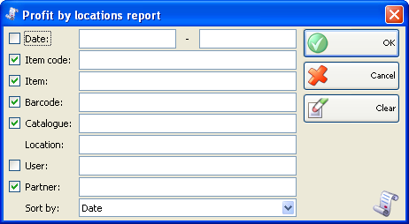
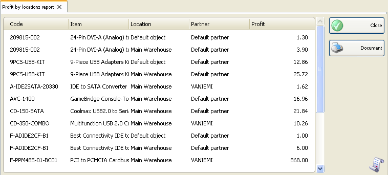

Raport profit dupa localizare
In prima fereastra a raportului se pot specifica criteriile de filtrare si campurile care se vor vizualiza.
Numai randurile bifate se vor vizualiza in raport.

Se pot allege filtrari pentru fiecare camp prin apasarea tastei� F4.
Se poate limita raportul la un singur criteriu de filtrare � de exemplu, vizualizare profituri pentru o singura inregistrare sau se pot aplica mai multe criterii de filtrare in acelasi timp � de exemplu, vizualizare profituri de la un anumit client pentru o anumita perioada de timp.
Pentru stergerea filtrarilor specificate, click pe butonul Clear. In aceasta situatie raportul va afisa toate operatiile fara nici o restrictie.
Click pe butonul OK pentru a genera raportul dupa specificarea criteriilor de filtrare. Click pe butonul Cancel pentru inchiderea ferestrei.

Raportul profit dupa localizare contine informatii referitor la profiturile in fiecare localizare. Sunt afisate numele localizarilor si sumele pentru perioade de timp specificate in functie de filtrare.
�2006-2012 Microinvest, All rights reserved